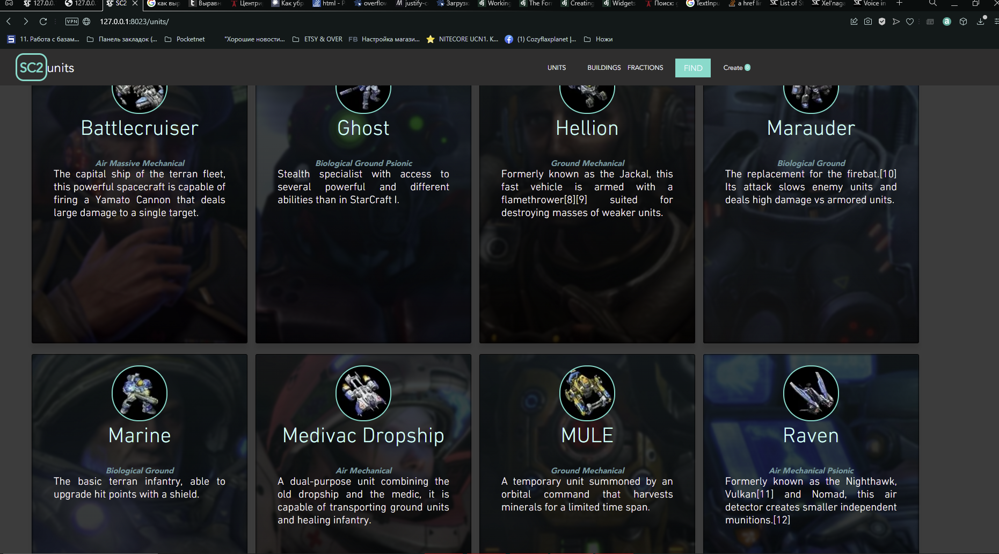
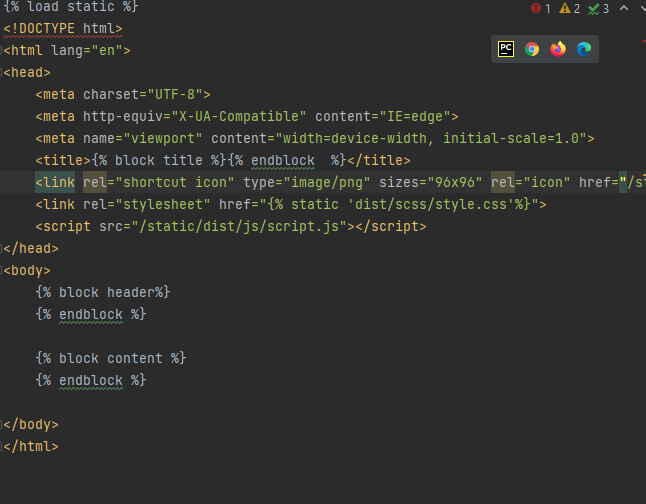
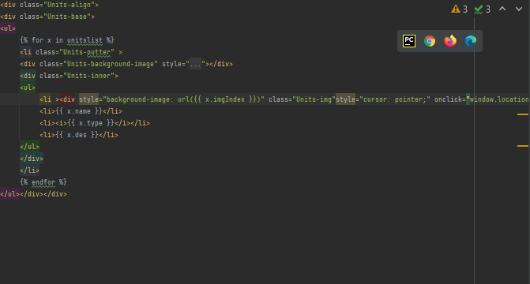
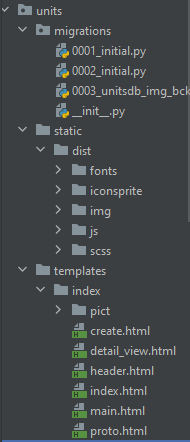
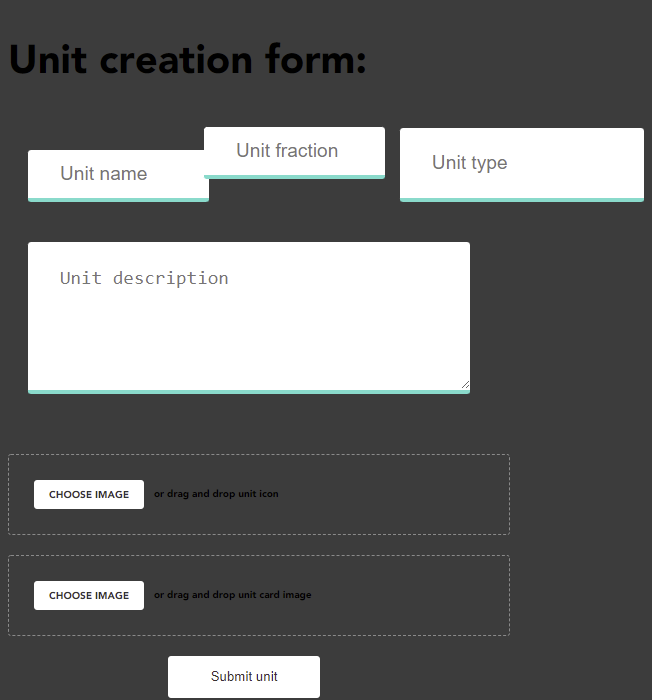
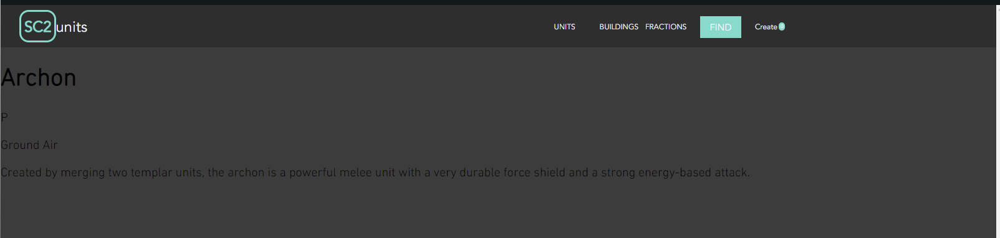

Ну создание и настройка самого джанго и приложений мы прошли еще на занятиях. И на конечно итоге для меня первые три видоса были малоэффективными.
Однако, начиная с третьего видоса я научился пользоваться шаблонизатором джинджа и работать с БД.
Настроив модуль и расставив шаблоны, я взялся за сайт, я хотел реализовать сайт с библиотекой юнитов SC2, реализуя их в виде карточек
скелет хтмл использую как шаблон
далее все подстраиваю под этот шаблон. карточки реализованы через цикл в шаблонизаторе
попробовал поставить галп для более эффективной работы с фронтенд частью, но теперь я ненавижу static
взялся за форму - сделал красиво. Подключив модуль через шаблонизатор, формы перекосило
Динамические страницы сделал на абы
Для возможности редактирования использовал шаблон создания элементов дб. Будет аремя сделаю достойный вид.